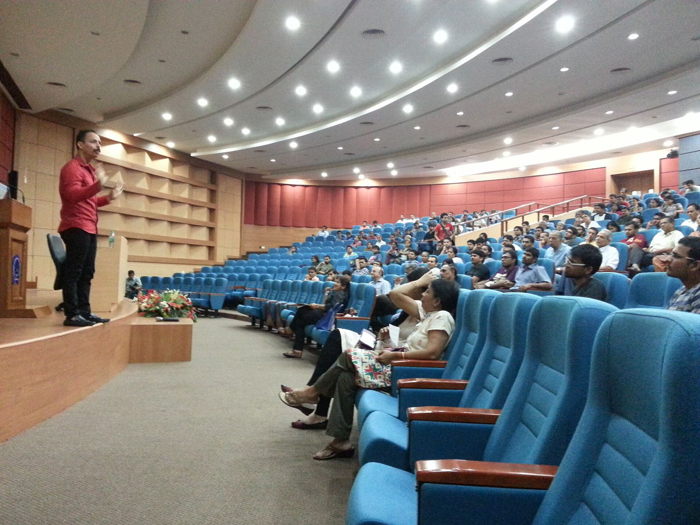
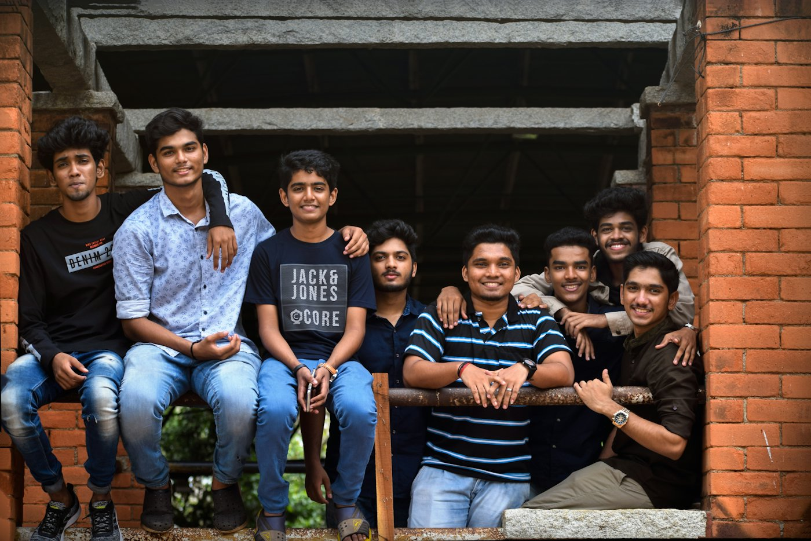

One office, five units, one continuum of care
In September 2026, IIT Bombay created a new post, Associate Dean, Student Wellness, so that prevention, support and care work as one coordinated system.
Created for the overall wellbeing of students
In September 2026, IIT Bombay took the initiative of creating a new post: Associate Dean, Student Wellness. This office has been created specifically for the overall wellbeing of students. It brings five units together under one roof — the Students Wellness Centre, the Flourishing Hub, Yogastha, NSS and the Student Mentorship Program — so that prevention, support and care work as one coordinated system.
Together they form a continuum of care: helping every student flourish, supporting those who need help, and caring for those in crisis.

Student wellbeing is a national priority
The Supreme Court of India (Sukdeb Saha v. State of Andhra Pradesh, 2025) and the Ministry of Education's 2026 committee report both ask institutions to move from reactive counselling to proactive, institution-wide support.
Flourishing Hub launched with alumni support
Supreme Court of India: Sukdeb Saha v. State of Andhra Pradesh
Ministry of Education committee report
IIT Bombay creates the post of Associate Dean, Student Wellness
24/7 psychiatry at the IIT Bombay Hospital; SHINE approved in IFM
The Student Wellness Ecosystem
One office, five units, one continuum of care
Select a unit in the diagram or below to see what it does and where it sits in the continuum of care.
Prof. Deepak Marla
Associate Dean of Student Wellness, IIT Bombay
- Role
- Associate Dean, Student Wellness
- Office created
- September 2026
- Leads
- SWC · Flourishing Hub · Yogastha · NSS · Student Mentorship Program
- Department
- Mechanical Engineering
- Research
- Micro- and nano-materials processing
“Every IIT Bombay student should know where to turn, and help should reach them at any hour.”
Our commitment · October 2026 update
As Associate Dean of Student Wellness
In September 2026, IIT Bombay created the post of Associate Dean, Student Wellness: an office dedicated to the overall wellbeing of students. Prof. Marla leads this office, which brings the Students Wellness Centre, the Flourishing Hub, Yogastha, NSS and the Student Mentorship Program under one roof so that prevention, support and care work as one coordinated system.
- Overall leadership of the five wellness units and the new initiatives
- Ongoing plans: 24/7 psychiatry at the IIT Bombay Hospital, Wellbeing Ambassadors, the SHINE Committee and Peer Circles with Faculty Advisors
- Future targets: the Wellbeing Quick Response Team, the RISE IITB app, longer counselling hours, a counsellor for every hostel and department, and dedicated administrative support
- The Institute Wellbeing Ambassadors work directly with the Associate Dean
- The proposed Chief Wellness Officer and Deputy Registrar, Student Wellness would support the Associate Dean
Academic background
Prof. Marla is a faculty member in the Department of Mechanical Engineering at IIT Bombay. His research is in micro- and nano-materials processing, including laser ablation and electrical discharge machining.